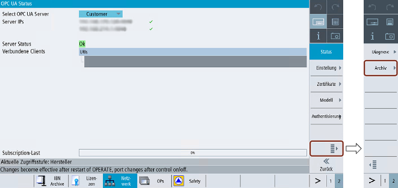
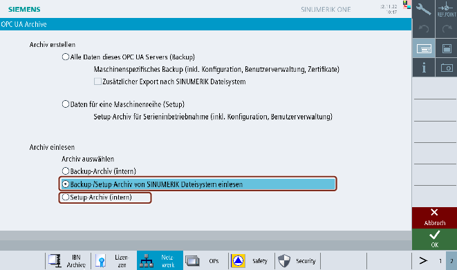
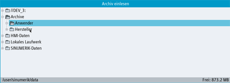

Mit der Archivierungsfunktion kann der Benutzer ein Backup des OPC UA Servers erstellen, sodass im Bedarfsfall alle Einstellungen und Daten wiederhergestellt werden können. Außerdem kann der Benutzer ein Einstellungsarchiv für die serielle Inbetriebnahme generieren und neue Maschinen mithilfe des Einstellungsarchivs aktualisieren.
Im Bild "Archivierung" kann der Benutzer:
ein OPC-UA-Server-Sicherungsarchiv erzeugen (d. h. ein vollständiges Archiv)
ein OPC-UA-Server-Einstellungsarchiv für die serielle Inbetriebnahme erzeugen
ein Sicherungsarchiv wiederherstellen
ein Einstellungsarchiv für die serielle Inbetriebnahme einlesen
Das OPC UA-Archiv bildet nur einen Teil des Operate-Archivs, wenn der Archivservice zuvor auf dem OPC UA Server durchgeführt wurde. Vor der Erstellung eines vollständigen Backups von Operate erstellen Sie zuerst ein OPC-UA-Backup.
Der Benutzer kann vom OPC UA Server ein Sicherungsarchiv (mit Konfiguration, Benutzerverwaltung, Modellen und Zertifikaten) erzeugen und es bei Bedarf wiederherstellen. Das OPC-UA-Sicherungsarchiv kann nur auf dieselbe Steuerung oder dieselbe SD-Karte zurückgespeichert werden, da das Serverzertifikat ein Teil des Backups ist.
Drücken Sie den Softkey "OPC UA".
Drücken Sie den erweiterten Softkey wie im folgenden Bild dargestellt.
Erweiterter Softkey
| Hinweis |
Wenn die OPC-UA-Server-Lizenz nicht aktiv ist, ist auch der erweiterte Softkey deaktiviert. |
Drücken Sie den Softkey "Archivieren".
Das Dialogfeld "OPC-UA-Archive" wird angezeigt. Wählen Sie das Optionsfeld "Alle Daten dieses OPC UA Servers (Backup)" unter "Archiv erzeugen" aus.
| Hinweis |
|
Das Optionsfeld "Alle Daten dieses OPC UA Servers (Backup)" ist standardmäßig nur für die Zugriffsstufen Hersteller, Wartung und Benutzer aktiviert. |
| Hinweis |
|
Wenn zusätzlich eine Sicherungsdatei an das SINUMERIK-Dateisystem exportiert werden soll, wählen Sie das Kontrollkästchen "Zusätzlich nach SINUMERIK-Dateisystem exportieren" aus. Nach Drücken von "OK" wird ein Popup-Fenster angezeigt. Wählen Sie den Speicherort im SINUMERIK-Dateisystem aus, an dem die Sicherungsdatei gespeichert werden soll. |
OPC-UA-Server-Sicherungsarchiv erzeugen
Klicken Sie anschließend auf "OK". Ein Popup-Fenster mit der Meldung "OPC-UA-Archiv erfolgreich erzeugt" wird angezeigt.
Popup-Fenster zur Archiverzeugung
Drücken Sie "OK". Die Sicherungsdatei wird automatisch im lokalen Ordner (interner Speicher) und wie ausgewählt im SINUMERIK-Dateisystem gespeichert. Der interne Pfad für die NCU lautet "/card/user/sinumerik/hmi/cfg" und für die PCU/den IPC "C:\Program Files (x86)\Siemens\MotionControl/user/sinumerik/hmi/cfg".
| Hinweis |
|
| Hinweis |
|
Durch die Wiederherstellung des Sicherungsarchivs wird der Firewall-Port für den OPC UA Server nicht automatisch geöffnet. Aus Sicherheitsgründen muss dieser Port manuell in der Firewall geöffnet werden. |
Wählen Sie unter "Archiv einlesen" das Optionsfeld "Sicherungsarchiv (intern)".
OPC-UA-Server-Sicherungsarchiv wiederherstellen
Falls Sie die Sicherungsdatei auf dem SINUMERIK-Dateisystem gespeichert haben und dort auswählen möchten, wählen Sie das Optionsfeld "Sicherungs-/Einstellungsarchiv von SINUMERIK-Dateisystem einlesen" aus. Nach Drücken von "OK" wird ein Popup-Fenster angezeigt. Wählen Sie die Sicherungsdatei im SINUMERIK-Dateisystem aus.
Klicken Sie anschließend auf "OK". Bei einer gültigen Eingabedatei erscheint ein Popup-Fenster mit der Nachricht "Einlesen erfolgreich durchgeführt".
Popup-Fenster bei erfolgreichem Einlesen von Archiv
Drücken Sie "OK". Die Sicherungsdatei wird zurückgeschrieben.
| Hinweis |
|
Die Änderungen werden erst nach einem Neustart von SINUMERIK Operate wirksam. |
Der Benutzer erzeugt ein Archiv der Einstellungsdaten des OPC UA Servers (einschließlich Konfiguration, Benutzerverwaltung und Modellen) für die serielle Inbetriebnahme und aktualisiert neue Maschinen mithilfe dieses Einstellungsarchiv.
Wählen Sie unter "Archiv erzeugen" das Optionsfeld "Daten für eine Maschinenreihe (Einstellungen)".
| Hinweis |
|
Diese Option ist ausschließlich bei Zugriffsstufen für Hersteller aktiviert. |
Einstellungsdaten des OPC UA Servers für die serielle Inbetriebnahme archivieren
Drücken Sie "OK". Ein Popup-Fenster wird angezeigt.
Wählen Sie den Speicherort im SINUMERIK-Dateisystem aus, an dem die Einstellungsdatei gespeichert werden soll.
Klicken Sie anschließend auf "OK". Ein Popup-Fenster mit der Meldung "OPC-UA-Archiv erfolgreich erzeugt" wird angezeigt.
Popup-Fenster bei erfolgreichem Erzeugen eines Archivs
Drücken Sie "OK". Die Einstellungsdatei wird je nach Benutzerauswahl im USB-Laufwerk / freigegebenen Netzwerklaufwerk gespeichert.
Wählen Sie unter "Archiv einlesen" das Optionsfeld "Sicherungs-/Einstellungsarchiv von SINUMERIK-Dateisystem einlesen" aus.
Einstellungsdaten des OPC UA Servers für die serielle Inbetriebnahme archivieren
Falls Sie die Einstellungsdatei auf einem lokalen Ordner (interner Speicher) gespeichert haben und dort auswählen möchten, wählen Sie das Optionsfeld "Einstellungsarchiv (intern)" aus. Der interne Pfad für die NCU lautet "/card/user/sinumerik/hmi/cfg" und für die PCU/den IPC "C:\Program Files (x86)\Siemens\MotionControl/user/sinumerik/hmi/cfg".
| Hinweis |
Die Option "Einstellungsarchiv (intern)" ist ausschließlich bei Zugriffsstufen für Hersteller aktiviert. |
Drücken Sie "OK". Ein Popup-Fenster wird angezeigt.
Popup-Fenster mit USB/Netzwerkfreigabe-Option für Einstellungsarchiv
Wählen Sie die Einstellungsdatei im SINUMERIK-Dateisystem aus. Klicken Sie anschließend auf "OK".
Bei einer gültigen Eingabedatei erscheint ein Popup-Fenster mit der Nachricht "Einlesen erfolgreich durchgeführt".
Popup-Fenster bei erfolgreichem Einlesen von Archiv
Drücken Sie "OK". Das Einstellungsarchiv wurde erfolgreich erzeugt.
| Hinweis |
|
Die Änderungen werden erst nach einem Neustart von SINUMERIK Operate wirksam. |
Sl Nr.. | Auswahl | Beschreibung des Szenarios | Fehlermeldung |
1 | Sicherungsarchiv erzeugen | Erzeugung eines beliebigen Archivs, sofern ohne Probleme durchgeführt. | OPC-UA-Archiv erfolgreich erzeugt. |
ODER | |||
Einstellungsarchiv erzeugen | |||
2 | Sicherungsarchiv erzeugen (interner Speicher) | Falls nicht genügend Speicher verfügbar ist. | Nicht genügend Speicher auf IPC/NCU. |
3 | Sicherungsarchiv erzeugen (auf SINUMERIK-Dateisystem) | Falls nicht genügend Speicher verfügbar ist. | Nicht genügend Speicher im Dateisystem |
ODER | |||
Einstellungsarchiv erzeugen (auf SINUMERIK-Dateisystem) | |||
4 | Sicherungsarchiv erzeugen (auf SINUMERIK-Dateisystem) | Wenn der ausgewählte Speicherort schreibgeschützt ist oder kein Zugriff besteht. | Keine Berechtigung zum Schreiben auf ausgewähltem Datenträger. |
ODER | |||
Einstellungsarchiv erzeugen (auf SINUMERIK-Dateisystem) | |||
5 | Sicherungsarchiv erzeugen (auf SINUMERIK-Dateisystem) | Wenn der ausgewählte Speicherort schreibgeschützt ist oder kein Zugriff besteht. | Zugriff auf Laufwerk ist nicht möglich. |
ODER | |||
Einstellungsarchiv erzeugen (auf SINUMERIK-Dateisystem) | |||
6 | Sicherungsarchiv einlesen | Im internen Speicher wurde keine gültige OPC-UA-Archivdatei gefunden. | Kein OPC-UA-Archiv im internen Speicher verfügbar |
Oder | |||
Einstellungsarchiv einlesen | |||
7 | Sicherungsarchiv einlesen | Kein Fehler beim Einlesen der Datei. | Einlesen erfolgreich abgeschlossen. |
Oder | |||
Einstellungsarchiv einlesen | |||
8 | Sicherungsarchiv einlesen | Wenn die ausgewählte Datei kein gültiges OPC-UA-Archiv ist oder durch Bearbeitung unbrauchbar gemacht wurde. | Einlesen fehlgeschlagen. Datei ungültig. |
Oder | |||
Einstellungsarchiv einlesen | |||
9 | Sicherungsarchiv einlesen (externer Speicher) | Wenn das Sicherungsarchiv nicht von derselben Maschine stammt. | Einlesen fehlgeschlagen. Das Sicherungsarchiv wurde auf einem anderen SINUMERIK-Gerät erzeugt. |